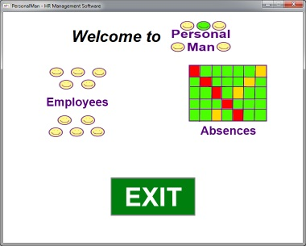
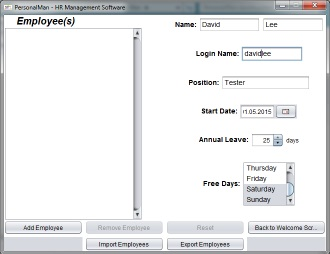
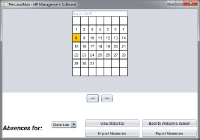

GIT Access
In order to prevent multiple edits to the source code simultaneously, this project uses the GIT version control system. The source code is available from here. The Javadoc with class diagrams can be downloaded from here.
System Requirements
You need the Java 8 Runtime Enviroment (or later) installed on your computer. If you are not sure which version of Java you have, run “java -version” from the command prompt (Windows) or from a terminal (Linux/Mac). You can download the latest version of the Java Runtime Environment here.
Download and Installation
Windows: Setup File (Download and run this file and follow the onscreen instructions). After installation, you can run PersonalMan from the start menu or the desktop.
Linux/Mac: ZIP File (Download the file to a directory of your choice). Extract the files from this zip into a directory of your choice. After extraction, open a console or terminal and navigate to the folder where you extracted the files to. Once in this directory, run java -jar “personalman-2.1.0.jar”.
Android/iOS: There is no app version of PersonalMan currently available.
Screenshots


